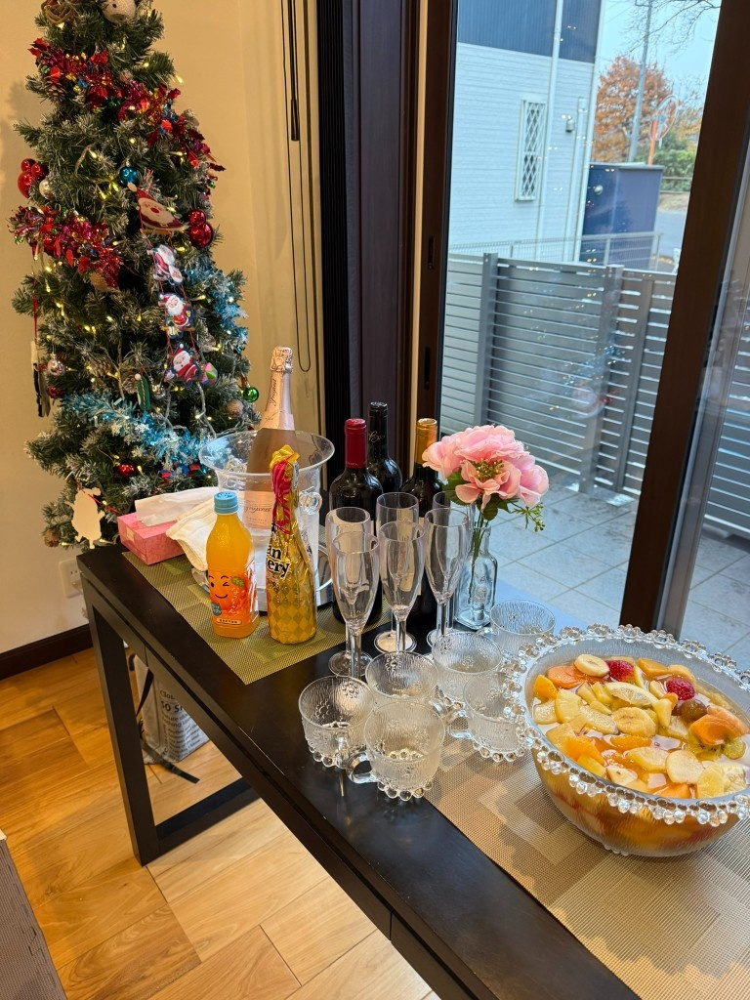
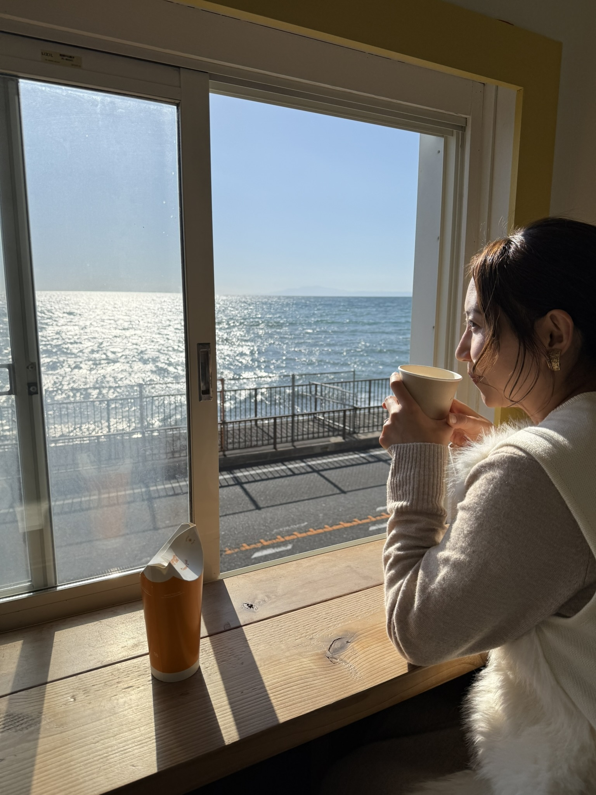
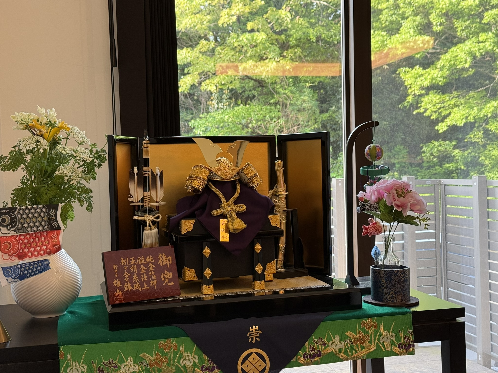
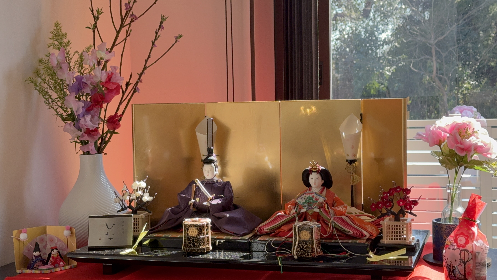
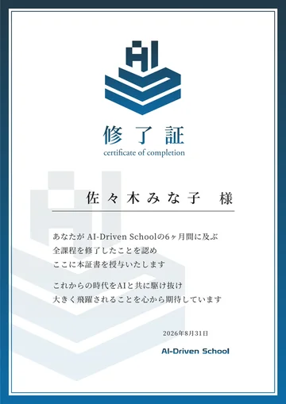

ライフシフトと現在の役割
過去：20年の会社員生活
走り続けた20年が確かに私を作ってくれた。次は、自分らしくいくために。
現在：子育てと家庭中心の暮らしへシフト
暮らしを整える時間を最優先に。日々の心地よさを見つめ直すフェーズ。
現在の役割
・中学生男子・小学生女子の母
・単身赴任中の夫と、家族の基盤を整える
「会社員時代には気づけなかった"今を感じる感覚"と、家庭の中の小さな変化に気づく"心の余白"が生まれています。」
前職でのこと
化粧品メーカーで20年、売上管理やレポート作成、データ整備を担当。コツコツ積み上げてきたことが、新しい挑戦の糧になっています。
退職という選択
子育てと仕事、どちらも大切にしたい。その気持ちに正直になって選んだ道。挫折ではなく、「自分をアップデートするチャンス」。そう思えたことが、今の私の出発点。
わたしを形作るもの




「今を丁寧に味わう」暮らしを整え、心地よさとバランスを大切にする生き方
これからの方向性とAIへの挑戦
化粧品メーカーでの会社員生活で得たさまざまな経験。家族のために立ち止まって気づいた、暮らしの豊かさ。そのふたつが今、AIと出会って動き出しています。難しく考えすぎず、暮らしの中でAIを使いこなす。それが私なりの「自分らしい働き方」への第一歩です。
「学んだことを、暮らしの中で形にするのが、今の私の一番の楽しみです。」
1
ワクワクする気持ち
大きな挑戦。でも、AIという未知の領域に対するワクワク感を何より大切に。
2
つくりながら、スキルを磨く
つくりながら学び、自分らしい「柔軟な働き方」の可能性を広げていく。
3
新しい自分での再スタート
過去の「会社員時代のわたし」とは違う、アップデートされた自分へ。
4
暮らしと仕事の両立・収入の確立
しっかり収入を得られる自分へと成長し、心地よい暮らしと仕事を両立させる。
AIスクールの修了と、取組んだ課題
AI-Driven School 修了

半年間の全課程を修了。卒業制作を含むすべての課題を提出し、修了証をいただきました。
修了証をタップすると拡大します
- 1パーソナル図解スキル
- 2面倒な報告を自動化するツール
- 3ひな形を自分の画面に仕上げる
- 4自分の画面に記憶を持たせる
- 5自分専用の提案スキルを作る
- 6卒業制作
暮らしの中のものづくり
アプリやページは、わたしからこんな感じで生まれています。
1
暮らしの「困った」から始める
暮らしの中のモヤモヤや、ムダに感じる作業に気づいたら、それを楽しく、役立つものに変えられないかを考えます。
2
AIと話しながら形にする
Claudeに相談しながら、アプリや文章、デザインを一緒につくります。
3
使ってみて、直す
家族や身近な人に使ってもらい、少しずつ磨いていきます。
今の心地よい暮らしを土台に。
ご縁のある方と、つながって広がっていけたらうれしいです。
知らなかったことが、できるようになる。その瞬間がたまらなく好きです。AI Driven Schoolの仲間と一緒に、これからも新しい扉を開いていきたいと思っています。
Minako Sasaki